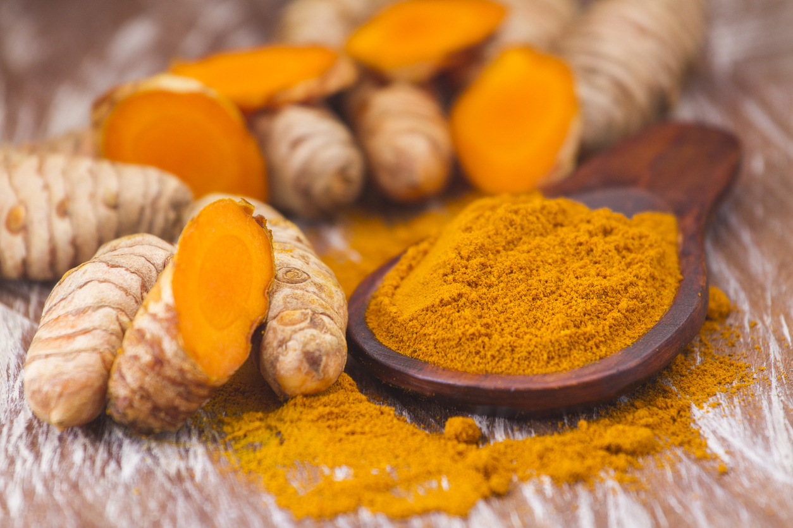

ขมิ้นชัน
ลดปวดและต้านการอักเสบ มีผลวิจัยจากภาควิชาเวชศาสตร์ฟื้นฟู คณะแพทยศาสตร์ศิริราชพยาบาล มหาวิทยาลัยมหิดล ว่าขมิ้นชันสกัด สามารถลดอาการอักเสบซึ่งเป็นสาเหตุของการปวดของผู้ป่วยข้อเข่าอักเสบได้ แต่ไม่ควรรับประทานติดต่อกันเป็นระยะเวลานาน ซึ่งข้อมูลส่วนนี้เป็นทางเลือกดูแลตัวเองแก่ผู้ที่มีอาการปวดข้อและเป็นหวัด เพื่อแยกโรคหวัดธรรมดา กับ โรคโควิด-19 ที่มีอาการปวดเมื่อยตามตัวได้ด้วย
ขมิ้นชันอุดมไปด้วยวิตามินและแร่ธาตุหลายชนิด เช่น วิตามินเอ วิตามินบี 1 วิตามินบี 2 วิตามินบี 3 วิตามินซี วิตามินอี ธาตุแคลเซียม ธาตุฟอสฟอรัส ธาตุเหล็ก และเกลือแร่ต่าง ๆ รวมไปถึงเส้นใย คาร์โบไฮเดรต และโปรตีน เป็นต้น และขมิ้นชันมีสรรพคุณทางยาที่รักษาอาการและโรคต่าง ๆ ได้หลายชนิด มีประวัติในการนำมาใช้ในการรักษามากกว่า 5,000 ปี สำหรับขมิ้นชันที่จะนำมาใช้ประโยชน์นั้น การเก็บเกี่ยวไม่ควรเก็บในระยะที่ขมิ้นเริ่มแตกหน่อ เพราะจะทำให้สารที่มีประโยชน์อย่างเคอร์คูมินในขมิ้นมีน้อย ส่วนเหง้าที่เก็บมาต้องมีอายุอย่างน้อย 9-12 เดือน และต้องไม่เก็บไว้นานเกินไป และไม่ให้ถูกแสงแดด เพราะน้ำมันหอมระเหยในขมิ้นจะหมดไปเสียก่อน
